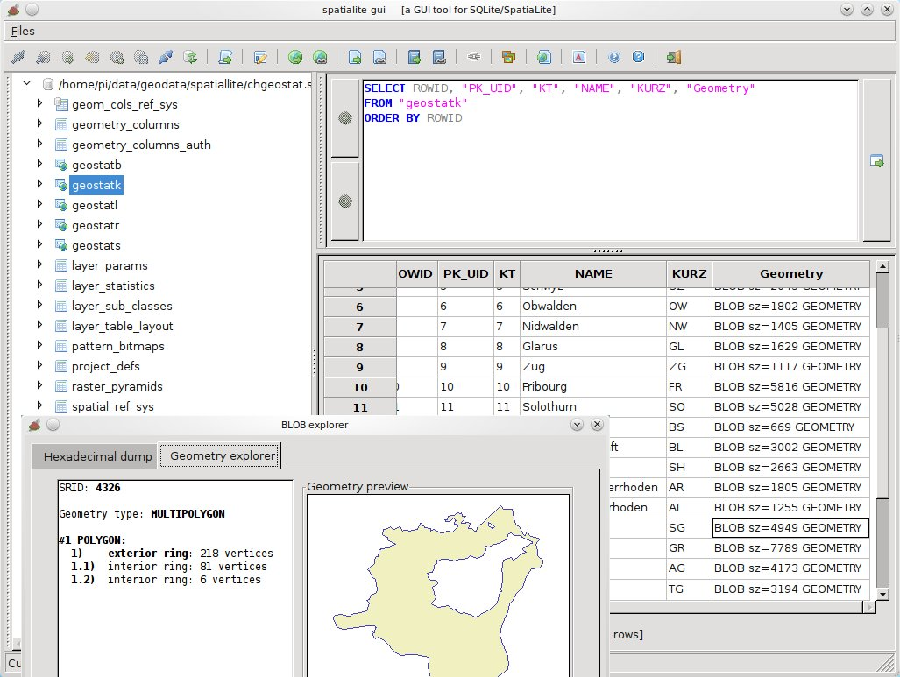

SpatiaLite¶
Base de données spatiale¶
SpatiaLite est un moteur de base de données SQLite avec des fonctions spatiales intégrées en plus.
SQLite est un système de gestion de base de données (SGBD) qui est simple, robuste, facile à utiliser et très léger. Chaque base de données SQLite est simplement un fichier. Vous pouvez librement le copier, le compresser, et l’échanger entre Windows, Linux, MacOs etc.
{kind=link}
Caractéristiques principales¶
L’extension SpatiaLite permet à SQLite de supporter les données spatiales en se conformant aux spécifications de l’OGC.
Points forts:
Interface graphique facile à utiliser
Formats WKT et WKB standards
Fonctions SQL spatiales comme AsText(), GeomFromText(), Area(), PointN() …
Fonctions d’analyses spatiales OpenGis fournies via GEOS, comme Overlaps(), Touches(), Union(), Buffer() …
Métadonnées spatiales complètes alignées avec les spécifications OpenGis
Notations pour les géométries nombreuses - EWKT, GML, KML, et GeoJSON
Importation et exportation de shapefiles
Reprojection de coordonnées via PROJ.4 et le jeu de données des paramètres géodésiques EPSG
Codage de caractères des locales via GNU libiconv
Index spatiaux basés sur l’extension RTree de SQLite
Accès aux shapefiles comme VIRTUAL TABLEs, permettant des requêtes SQL standard sur des shapefiles externes, sans les importer ou les convertir
Accès à des fichiers CSV/TXT/TSV ou des tableurs XLS comme VIRTUAL TABLEs
Accès à des documents XML, des objets binaires compressés stockés sous forme de BLOB, incluant des vérifications des contraintes de validation syntaxique « well formed » et de schéma XSF. Support spécifique pour les métadonnées ISO, les styles SLD/SE et les documents XML graphiques SVG peuvent être interrogés en utilisant la syntaxe Xpath standard.
Interroge des serveurs WFS externes.
Parse les fichiers externes DXF (toutes versions) et stocke les couches et les géométries trouvées.
Génération et export de fichiers DXF
Détails¶
Site web: http://www.gaia-gis.it/gaia-sins/
Licence: MPL v1.1 et GPL v3
Version du logiciel: 5.0.0
Plates-formes supportées: Linux, Mac, Windows
Interface API: C